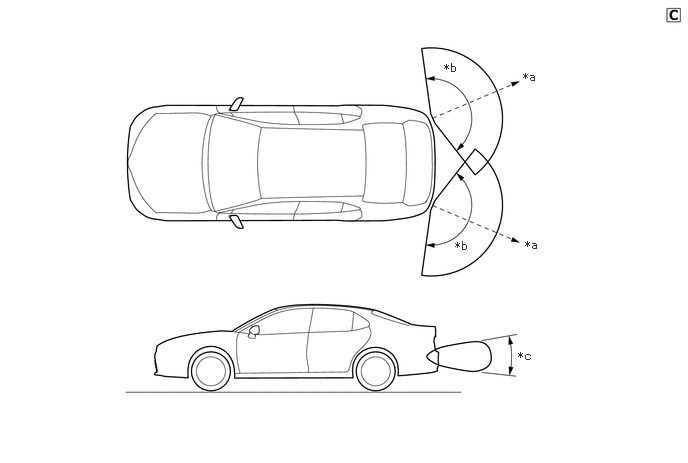

| Last Modified: 10-07-2025 | 6.11:8.1.0 | Doc ID: NM100000002GLDQ |
| Model Year Start: 2024 | Model: Tacoma | Prod Date Range: [12/2023 - ] |
| Title: PARK ASSIST / MONITORING: BLIND SPOT MONITOR SYSTEM: BLIND SPOT MONITOR SENSOR; 2024 - 2026 MY Tacoma Tacoma HV [12/2023 - ] | ||
BLIND SPOT MONITOR SENSOR
CONSTRUCTION
(a) The blind spot monitor sensor consists of a radar wave circuit and signal processing circuit.
(b) The radar wave uses frequencies in the 24 GHz band.
|
*a |
Distance: Approximately 60 m (230 ft.) |
*b |
Horizontal Angle: Approximately 150° |
|
*c |
Vertical Angle: Approximately 20° |
- |
- |
(1) The distance to the object, azimuth, and relative speed are calculated from the information that is provided by the reflected radar wave as described below.
|
Item |
Calculation Method |
|---|---|
|
Distance |
Calculated from the length of time that has elapsed from the time the waves of the radar wave have been emitted, until the reflected waves are received by the radar wave circuit. The distance is approximately 60 m (230 ft.). |
|
Azimuth |
Calculated from the reception angle of the radar wave reflections received. The detection angle has a horizontal range of approximately 150° and a vertical range of approximately 20°. |
|
Relative Speed |
Calculated by utilizing the change (Doppler effect*) that occurs in the frequency of the reflected radar waves. |
HINT:
*: The Doppler effect causes the observer to perceive the radio waves emitted by a moving object to be a higher frequency as it approaches, and to be a lower frequency as it recedes. An SST is used if radar axis confirmation is needed. For details, refer to the Repair Manual.